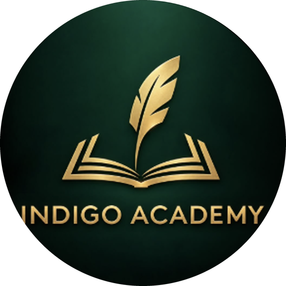

Наша миссия
Воспитывать любознательных, воспитанных и уверенных в себе молодых людей, которые мыслят самостоятельно, говорят на нескольких языках и готовы к миру.
Indigo Academy West — школа сети Indigo Academy в Бишкеке. Здесь мальчики и девочки учатся с 1 по 12 класс.
Наша история
Indigo Academy West входит в Indigo Academy — сеть частных школ Бишкека, известную сильным преподаванием и вниманием к каждому ребёнку.
Родители хотели школу, где крепкая академическая база сочетается с современными методиками, настоящей практикой английского и широким образованием. Indigo Academy West — наш ответ: школа совместного обучения для 1–12 классов, с сингапурской методикой в начальной школе и программой Cambridge с 7 класса.
Наша миссия
Воспитывать любознательных, воспитанных и уверенных в себе молодых людей, которые мыслят самостоятельно, говорят на нескольких языках и готовы к миру.
Наше видение
Быть школой, которую выбирают семьи Бишкека, когда хотят для детей сильного образования, настоящего английского и международных возможностей.
Наши ценности
Обращение директора
Спасибо за интерес к Indigo Academy West. Выбор школы — одно из важнейших решений для семьи, и для нас большая честь, что вы рассматриваете нашу школу.
Наши учителя знают каждого ребёнка по имени. Они видят, когда ученик готов к более сложной задаче, а когда ему нужна поддержка. Мы измеряем успех не только оценками, но и тем, насколько уверенно наши ученики думают, говорят и работают вместе — на родном языке и на английском.
Приглашаю вас прийти к нам, посмотреть уроки и поговорить с нашей командой.
Директор Indigo Academy West
Наш подход
Небольшие классы и учителя, которые внимательно следят за успехами каждого.
Больше часов английского и преподаватели — носители языка в штате.
Робототехника, шахматы и комуз как предметы: логика, творчество и культура.
Программа Cambridge с 7 класса и подготовка к зарубежным университетам.

Наша семья
Indigo Academy West использует опыт, методики и программы развития учителей сети школ Indigo Academy в Бишкеке.
Перейти на indigo.edu.kg